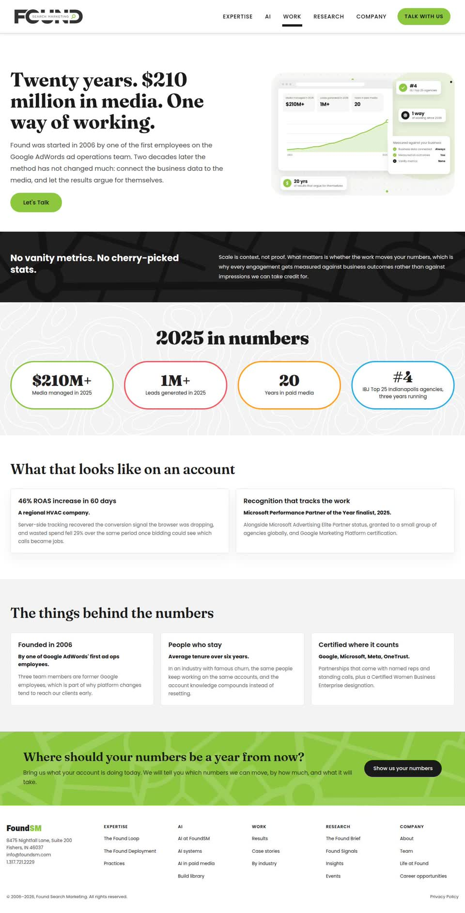
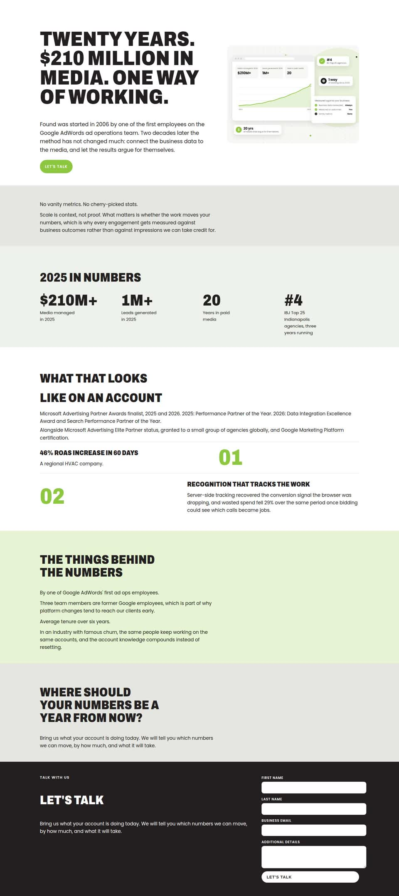
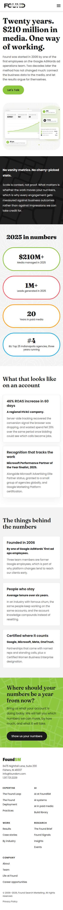
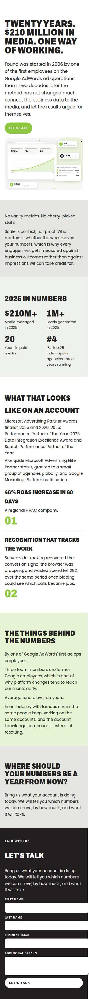

Work · medium




kept, reworded (proposed for Megan's approval, not final)
Before: Microsoft Performance Partner of the Year finalist, 2025.
After: Microsoft Advertising Partner Awards finalist, 2025 and 2026. 2025: Performance Partner of the Year. 2026: Data Integration Excellence Award and Search Performance Partner of the Year.
41 of 41 items kept. Reworded items are still on the page. Open the list to see each one.